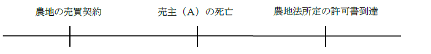
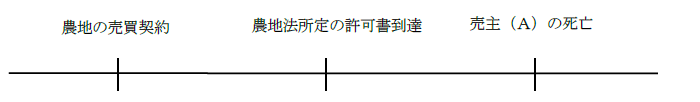
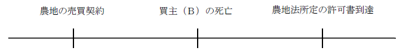
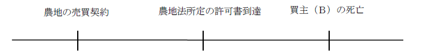

第２編 総 論
第４章 添付情報
第２節 印鑑証明書
1. 申請人の申請意思を確認するための印鑑証明書
書面申請の方法（特例方式の場合も含む。）において、所有権（仮登記を含む）の登記名義人が登記義務者となる場合には、原則として、申請書（本人申請の場合）又は委任状（代理人による申請の場合）に押印した印鑑について、印鑑証明書の提供が必要とされる（不登令16条2項、18条2項）。
2. 文書成立の真正を担保させるための印鑑証明書
添付書面としての同意書や、承諾書等に押印した印鑑について、原則として、当該書面に押印した印鑑について、印鑑証明書の提供が必要とされる（不登令19条2項）。
| 1.の印鑑証明書 | 2.の印鑑証明書 | |
| 作成期限 | 作成後3か月以内（不登令16条3項、18条3項） | 作成期限なし |
| 添付情報欄への記載 | 「印鑑証明書」と記載する | 記載なし（同意書等の添付情報の一部として提供する） |
1. 申請書又は委任状に押印した印鑑について、印鑑証明書の提供が必要とされる場合
書面申請の方法（特例方式の場合も含む。）、原則として以下の印鑑について印鑑証明書の提供が必要とされる。
①本人申請の場合には、申請書に押印した印鑑（不登令16条2項）
②申請代理人により申請した場合には、その代理権を証する書面（委任状）に押印した印鑑（不登令18条2項）
2. 申請書又は委任状への記名押印の要否
(1) 原則（不登令16条1項、18条1項）
| 本人申請 | 代理人申請 | |
| 記名押印する者 | 申請人ｏｒ代表者ｏｒ代理人 | 申請人ｏｒその代表者 |
| 記名押印する書面 | 申請書 | 委任状 |
(2) 例外
次の場合には、申請人は記名押印を省略することができる。
①委任による代理人が申請書に署名した場合（不登規47条1号）
②申請人等が署名した申請書について公証人又はこれに準ずる者の認証を受けた場合（不登規47条2号）
公証人（又はこれに準ずる者）の認証を受けたということは、これらの者が本人確認をしたということである為、申請書の真正が担保されているといえる。
③申請人が次に掲げる者のいずれにも該当せず、かつ、当該申請人等が申請書に署名した場合（①②に掲げる場合を除く。不登規47条3号）
イ （省略。各論で扱う）
ロ 所有権の登記名義人であって、不動産登記法22条ただし書の規定により登記識別情報を提供することなく担保権（根抵当権及び根質権を除く。）の債務者に関する変更の登記又は更正の登記を申請するもの
ハ 所有権以外の権利の登記名義人であって、不動産登記法22条ただし書の規定により登記識別情報を提供することなく当該登記名義人が登記義務者となる権利に関する登記を申請するもの
ニ （省略）
ホ 不動産登記法21条本文の規定により登記識別情報の通知を受けることとなる申請人
3. 印鑑証明書の提供が不要となる場合
| ①法人の代表者又は代理人が記名押印した者である場合において、その会社法人等番号を申請情報の内容としたとき（不登規48条1号、49条2項1号） |
| ②申請人又はその代表者若しくは代理人が記名押印した申請書ｏｒ委任状について公証人又はこれに準ずる者の認証を受けた場合（不登規48条2号、49条2項2号） ※1 |
| ③裁判所によって選任された者がその職務上行う申請の申請書に押印した印鑑に関する証明書であって、裁判所書記官が最高裁判所規則で定めるところにより作成したものが添付されている場合（不登規48条3号、49条2項3号） ※2 |
| ④登記識別情報の通知を受けることとなる申請人（不登規48条4号、49条2項4号、47条3号ホ） ※3 |
| ⑤申請人が不動産登記規則47条3号イからニまでに掲げる者のいずれにも該当しない場合（④に掲げる場合を除く。不登規48条5号、49条2項4号） |
| ⑥復代理人によって申請する場合における代理人（委任による代理人に限る。）が復代理人の権限を証する書面に記名押印した場合（不登規49条2項5号） |
→代理人申請のみ
※1 公証人等の認証があれば、当該申請書が作成名義人によって作成されたことが担保されるからである。公証人は、認証をする際に本人確認を行う。
※2 裁判所書記官が作成した印鑑証明書が提供されていれば、当該申請書が作成名義人によって作成されたことが担保されるからである。
ex.破産管財人が、破産財団に属する不動産について、任意売却による所有権の移転の登記の申請をする場合には、同人が申請書に押印した印鑑についての、裁判所書記官が作成した証明書を添付すれば、同人の住所地の市区町村長が作成した、印鑑に関する証明書を添付することを要しない。
※3 権利者となる者である。権利者は利益を受ける者であるから、印鑑証明書を提供させてもあまり意味がない。
4. その他
認可を受けた地縁による団体の代表者の印鑑証明書を、申請情報を記載した書面に記名押印した者の印鑑証明書として取り扱って差し支えない（平4.5.20民3.2430）とされている。また、この代表者の印鑑証明書は作成後3か月以内のものでなければならない（不登令18条3項）。
1. 同意書や承諾書等に押印した印鑑について、印鑑証明書の提供が必要とされる場合
添付書面としての同意書や承諾書等に押印した印鑑については、印鑑証明書の提供が必要とされるのが原則である（不登令19条2項）。
これは、私人や法人が作成した同意書や承諾書等に関する話である。そのため、例えば、「登記原因について第三者の許可を証する情報」として、農地法所定の許可書を提供する時に、農業委員会又は都道府県知事の印鑑証明書の提供は不要である。
2. 具体例
①登記上の利害関係を有する第三者の承諾書に押印された印鑑について（不登令19条1項、2項、7条1項6号、66条、不登令別表26添付情報ヘ等、昭33.10.24民甲2221）
②敷地権のない区分建物の所有権を表題部所有者から取得した場合の、所有権取得証明情報に押印された印鑑について（不登令19条1項、2項、74条2項前段、不登令別表29添付情報イ、昭58.11.10民3.6400）
③仮登記権利者が仮登記を単独で申請する場合の、登記義務者の承諾書に押印された印鑑について（不登令19条1項、2項、不登令別表68添付情報ロ）
※もっとも、登記上利害関係を有する第三者の承諾を証する情報を記載した書面を添付して所有権の移転の仮登記に基づく本登記を申請する場合であっても、当該書面が公証人の認証を受けたものであるときは、当該第三者の印鑑に関する証明書を添付することを要しない（不登令19条2項、不登規50条2項、48条2号）。
※法人の代表者又は代理人が記名押印した者である場合において、その会社法人等番号を申請情報の内容とした場合には、同意書等に押印した印鑑証明書の添付を要しない（不登令19条2項、不登規50条2項、48条1号）。
1. 署名証明書の提供
申請人が外国人である場合には、印鑑証明書ではなく、「署名証明書」というものを提供する（昭34.11.24民甲2542）。外国には、印鑑証明書という制度がない場合も多いため、署名が本人によるものであることを大使館等で証明してもらうことによって、印鑑証明書の代わりとする。
2. 作成期限
署名証明書は、作成後3か月以内のものであることを要しない（登研160P.47）。
3. 印鑑証明書の提供
日本に居住する外国人が、市区町村長の証明に係る印鑑証明書の交付を受けた上でこれを提供して、登記の申請をすることもできる。外国人であっても、印鑑登録をし、印鑑証明書を提供することは何の問題もない。
第３節 登記原因について第三者の許可、同意又は承諾を証する情報
権利に関する登記を申請する場合において、登記原因について第三者の許可、同意又は承諾を要するときは、当該第三者が許可し、同意し、又は承諾したことを証する情報を申請情報と併せて登記所に提供しなければならない（不登令7条1項5号ハ）。
この「登記原因について第三者の許可、同意又は承諾（以下、「第三者の承諾等という）を要するとき」には、以下の2つの場合がある。
もっとも、許可等を得ないときは罰則の適用があるものの権利変動は有効であるという場合があり、その場合は除かれる。
| 登記原因日付への影響 | 具体例 | |
| ① 第三者の承諾等が登記原因である法律行為の効力発生要件となっている場合 | 第三者の承諾等の時期が、登記原因日付に影響する。 | ①農地法所定の許可 ②順位変更 ③（原則）根抵当権に関する承諾等 ④賃借権の抵当権に優先する同意 |
| ② 第三者の承諾等が登記原因である法律行為の効力発生要件ではないが、第三者の承諾等がないときは、登記原因である法律行為に取消・無効原因が存在する場合（大判昭10.2.25、昭22.6.23民甲560、登記実務） | 第三者の承諾等の時期が、登記原因日付に影響しない。 | ①親権者の同意（※） ②保佐人や補助人の同意 ③会社と取締役の利益相反取引の会社の承諾 ④親権者と子の利益相反行為の特別代理人の選任 ⑤敷地権付き区分建物の所有権保存の登記についての敷地権の登記名義人の承諾 ⑥賃借権の譲渡・転貸の賃貸人の承諾 |
※未成年者が不動産の売買等の法律行為をするときは、親権者の同意を要するので（民法5条1項）、親権者の同意なしに未成年者が法律行為をした場合には、その行為を取り消すことができるものとなる。そして、取り消された行為は、遡及的に無効となるので（民法121条本文）、登記も無効となる。そこで、登記原因が未成年者の法律行為である場合には、親権者の同意を証する情報を提供しなければならない（昭22.6.23民甲560）。
1. 仮登記の場合
登記原因について第三者の許可、同意又は承諾を要するときでも、仮登記の申請では、許可等を証する情報を提供する必要はない（昭39.3.3民甲291）。
2. 後見に関する第三者の許可、同意又は承諾を証する情報
(1) 成年被後見人の居住の用に供する建物につき売買を原因とする所有権の移転の登記の申請をするときは、申請情報と併せて家庭裁判所の許可があったことを証する情報を提供しなければならない（不登令7条1項5号ハ）。
居住用不動産に該当しない場合には、家庭裁判所の許可は不要である。
(2) 後見監督人がある場合において、後見人が、被後見人に代わって営業若しくは民法13条1項各号に掲げる行為をするには、同条同項1号に掲げる元本の領収を除き、その同意を得なければならない（民法864条）。
よって、成年後見人が成年被後見人に代わって成年被後見人の居住用でない不動産を売却する場合には、「後見監督人の同意があったことを証する情報」の提供を要する（不登令7条1項5号ハ）。
3. 所有者不明土地の売却
所有者不明土地管理命令（民法264条の2第1項）により選任された所有者不明土地管理人は、裁判所の許可を得て、対象土地を売却することができる。この場合の所有権移転登記の申請は、対象土地の所有権の登記名義人が義務者となり、管理人がその代理人となって、買受人（権利者）と共同して行う（令5.3.28民二.533）。
登記原因証明情報以外に必要となる添付情報は、以下のとおりである
・承諾を証する情報：裁判所の許可に係る裁判書の謄本
・代理権限証明情報：管理人の印鑑証明書
・印鑑証明書（所有権の登記名義人が登記義務者となる場合に該当するため）：管理人の印鑑証明書
※登記識別情報は不要
所有者不明建物管理命令（民法264条の8第1項）でも同様である。
4. 管理不全土地管理命令（民法264条の9第1項）の対象土地の売却
管理不全土地管理人が裁判所の許可（当該許可をするには所有者の同意が必要。民法264条の10第3項）を得て対象土地を処分した場合の登記申請は、所有者不明土地管理命令の場合と基本的に同様である。
なお、この場合において、裁判所の許可に係る裁判書の謄本とは別に、所有者の同意を証する情報の添付を要しない（令5.3.28民二.533）。裁判所の許可は所有者の同意がなければすることができない為、裁判書の謄本を添付すれば既に同意が得られていると判断できるからである。
管理不全建物管理命令（民法264条の14第1項）でも同様である。
1. 総論
農地について登記を申請する場合、国が一定の食料自給率を保つため等の政策的観点から、農業委員会（市町村に置かれる行政委員会）の農地法所定の許可を要する場合がある（農地法3条参照）。この許可がなければ、所有権の移転等の効力が生じない（農地法3条7項、1項）。そこで、農地法の許可を要する場合、登記の申請書には、農地法所定の許可があったことを証する情報(ex.農地法所定の許可書)を併せて提供することを要する。
2. 農地法所定の許可の要否
農地法の許可の要否は、ほぼ以下の視点で判断することができる。
(1) 意思による移転は必要、そうでないものは不要
| 必要 | 不要 |
| 売買、贈与、死因贈与 | 相続 、遺産分割 |
| 協議による財産分与 | 調停による財産分与（農地法3条1項ただし書、12号） |
| 特定遺贈 | 包括遺贈、相続人への特定遺贈 |
| 相続人以外への相続分の譲渡 | 相続人への相続分の譲渡 |
| 遺産分割による贈与（登研528P.184） | 特別縁故者への財産分与 |
| 共有物分割 | 共有者の持分放棄 |
| 合意解除 | 法定解除 |
| 買戻権行使による所有権移転 | 時効取得 |
①ＡからＢへ農地の所有権移転の登記がされた後、これをＢ・Ｃ共有名義とする更正登記の申請には、農地法所定の許可書が必要である（登研444P.107）。
②相続を原因としてＡ名義に登記されている農地について、Ａ・Ｂ共有名義とする更正登記を申請するには、農地法所定の許可書の提供は不要である（登研417P.104）。
(2) 実質的に所有者が変わらないなら不要
| 必要 | 不要 |
| 民法646条2項による移転 前登記名義人以外の者への真正な登記名義の回復 |
権利能力なき社団の代表者交代(委任の終了) (昭58.5.11民3.2983) 前登記名義人への真正な登記名義の回復 会社分割（登研18P.27、648P.197） |
・既に相続登記がされている農地について、真正な登記名義の回復を登記原因とする他の相続人への所有権の移転の登記を申請するときに、登記原因証明情報に事実関係（相続登記に誤りがあることや、申請人が相続によって取得した真実の所有者であること等）又は法律行為（遺産分割等）が記録されている場合には、農地法所定の許可書の提供を要しない（平24.7.25民2.1906）。
ex.農地の所有権登記名義人であるＡが死亡し、相続人がＢＣであるところ、Ｂ名義の相続登記がされていた。これについて、真正な登記名義の回復を原因としてＢからＣへの所有権移転登記を申請する場合において、登記原因証明情報に事実関係（相続登記に誤りがあることや、申請人が相続によって取得した真実の所有者であること等）又は法律行為（遺産分割等）が記録されているときは、農地法所定の許可書を提供する必要はない。
(3) 使うなら必要、使わないなら不要
| 必要 | 不要 |
| 地上権・区分地上権・永小作権・賃借権・不動産質権設定 | （根）抵当権設定 |
・農地の地下に工作物を設置することを目的とする地上権又は地役権の設定の登記の申請においては、農地法所定の許可書の提供を要する（昭44.6.17民甲1214）。
3. 農地法の許可と当事者の死亡
基本的なポイントは以下の2点である。
ⅰ 農地の売買は、農地法所定の許可書の到達により効力が生じる（所有権が移転する）。
ⅱ 農地法の許可は、新たに農地を使用収益する者が誰になるのかを問題とするものなので、売主の死亡は許可の効力に影響を与えない。
(1) 売主の死亡
(a) 農地の売買契約 → 売主の死亡 → 農地法所定の許可書到達

効力発生前に売主が死亡しているので、農地の所有権は売主の相続人に移転している。
従って、登記申請手続は、以下の順ですることになる（昭40.3.30民3.309）。
1/2 売主から売主の相続人への相続による所有権移転登記
2/2 売主の相続人から買主への所有権移転登記
(b) 農地の売買契約 → 農地法所定の許可書到達 → 売主の死亡

売主死亡時には、既に許可書の到達により、売主買主間の売買契約の効力は発生している。つまり、農地の所有権は売主から買主に移転している。
従って、登記申請手続としては、以下の登記を申請することになる。
1/1 売主から買主への所有権移転登記（売主は既に死亡しているので、売主の相続人全員が登記義務者として買主とともに登記申請することになる）
(2) 買主の死亡
(a) 農地の売買契約 → 買主の死亡 → 農地法所定の許可書到達

許可書が到達したとしても、買主が死亡していては、当該許可は効力を有しない（登研124P.45）ので、売主から買主への所有権の移転の効果は生じない。この場合、買主の相続人に農地を移転することについて、農地法所定の許可を取り直して、売主から買主の相続人への所有権移転登記をすべきことになる（昭51.8.3民3.4443）。
(b) 農地の売買契約 → 農地法所定の許可書到達 → 買主の死亡

買主死亡時には、既に許可書の到達により、売主買主間の売買契約の効力は発生している（登研124P.45）。つまり、農地の所有権は売主から買主に移転している。
従って、登記申請手続としては、以下の登記を申請することになる。
1/2 売主から買主への所有権移転登記（買主は既に死亡しているので、買主の相続人（相続人が複数いる場合には、そのうちの1人でも可）が、登記権利者として、売主とともに登記申請することになる。）
2/2 買主から買主の相続人への相続による所有権移転登記
4. その他の農地法所定の許可に関する知識
①所有権移転の原因を「売買」とした農地法所定の許可書を提供して、農地につき「贈与」を原因とする所有権移転の登記を申請することはできない（昭40.12.17民甲3433）。
②所有権の譲受人として数名が記載されている農地法所定の許可書を提供して、譲受人を単有名義とする所有権移転登記を申請することはできない（登研448P.132）。
③農地の所有権移転において、農地法所定の許可書に記載されている地積が登記記録上の地積と相違している場合であっても、土地の地番その他の表示により土地の同一性が認められるときは、当該許可書を提供して移転の登記を申請することができる（昭37.6.26民甲1718）。
④登記記録上の地目は田であるが、現況は宅地である土地の所有権移転登記を申請する場合でも、農地法3条又は5条の許可書の提供を必要とし、農地法の適用がない旨を証する情報を提供して、登記を申請することはできない（昭31.2.28民甲431）。
⑤Ｂの所有権移転請求権保全の仮登記がされたＡ所有の農地について、ＣがＢからその請求権の譲渡を受けてその登記をした場合、Ｃは、Ａ・Ｂ間の所有権移転についての許可書を申請情報と併せて提供して仮登記に基づく本登記を申請することはできない。